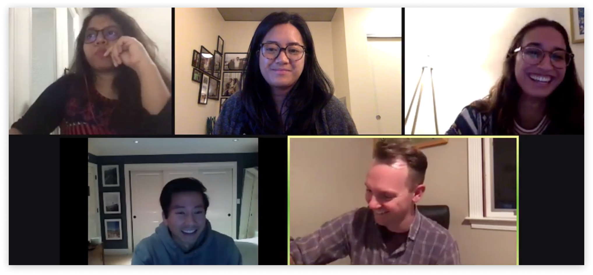
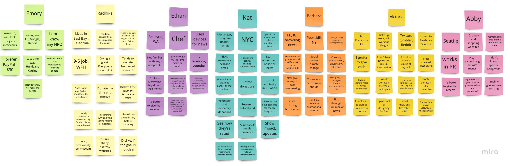
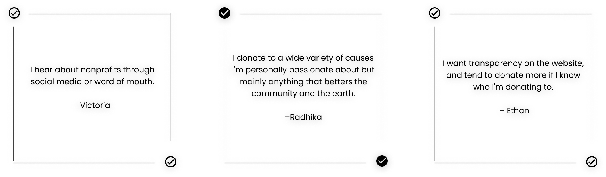
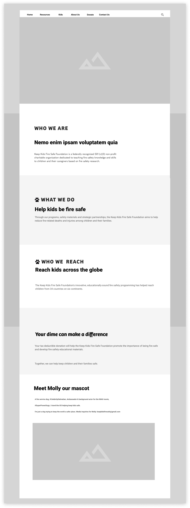

2.1 RWD Website: KKFSF
MISSION: Redesign a RWD website prototype for a local nonprofit - Keep Kids Fire Safe FoundationPROBLEM: K-12 Educators need an engaging and interactive way to educate young children. Fire safety research shows that most fire-related children deaths are preventable had children known fire safety tips. How can we design a fun platform that gives a strong message surrounding fire safety?
TIMELINE: 3 weeks
ROLE: UX Researcher, UI Designer, Project Manager
TOOLS: Miro, Figma, Trello, Google Suite, ZOOM, Adobe Illustrator
PREFACE
What is KKFSF?/a>
The Keep Kids Fire Safe Foundation aims to help reduce fire-related deaths and injuries among children and their families. Dedicated to teaching fire safety knowledge and skill to children and caregivers based on fire safety research. They have a cute mascot, Molly, to help attract young children.
1. RESEARCH
With the help of 3 other designers, a website brand audit was conducted to discover the strengths and weaknesses of the current layout.
Current website: https://www.keepkidsfiresafe.org/
Key takeways:
Competitive and SWOT Analysis:
2. EMPATHIZE
Stakeholder Interview
In order to fully understand KKFSF problems and objectives, we have reached out to the foundation to ask if we can interview one of their staff members virtually, Gavin. Below is the list of questions we have asked him during the virtual interview through ZOOM

Key takeaways:
Users Interview
Now that we know what to expect from our stalkholder. It's time to gather data from the users. My team and I have interviewed a total of 7 users. We wanted to learn on their general donation habits. Below is a screenshot of us conducting an interview with one of our users, Radhika.

Key takeaways:

After conducting all of our interviews, we begin to organize our data and ideas by doing an Affinity Diagram. Which then helped us create our User Persona
3. DEFINE
Problem: K-12 Educators need an engaging and interactive way to educate young children. Fire safety research shows that most fire-related children deaths are preventable had children known fire safety tips. How can we design a fun platform that gives a strong message surrounding fire safety?
Solution: Redesign the entire platform to capture more audience members. Moreover, make the website fun, easier to navigate, and provides the resources parents and teachers need to integrate a fire safety program.
4. IDEATE
After we identify our objectives, it's time to set our priorities straight. This is where we start brianstorming and utilize our sticky notes. The team and I wrote down our pros and cons of the current KKFSF's website.
What I Like, What I Wish, What If Diagram
Feature Prioritization Matrix

Storyboard
Style Tile
5. WIREFRAMES
Iterations of Home Page

6. PROTOTYPE
Based on our research and interviews, we have decided to:
1. Create a Kid's Corner page to attract children. They can play games and be educated about fire safety. However, the main users we are trying to target are educators, young adults with children and caretakers.
2. Remove the Donate tab from the navigation bar, and turn it into a floating icon that will follow you while you scroll.
3. Not use the color red so dominantly because it signals fire and alarm, which we did not want. However, we felt we had to implement a bit of red to our design because this is a non proft regarding fire protection.
Desktop and iOS Mockups


7. USABILITY TESTING
Understand the impression that our site gives to our users, and create an intuitive navigation. We did a total of 5 Usuability Testing. Below are three of our screen recordings of our users completing our objectives.
Tasks:
1. Download an activity
2. Make a donation
3. Send a message
Key Learnings:

8. FINAL THOUGHTS & NEXT STEPS
1. With more testing and stakeholder feedback, there’s more opportunity to iterate on the overall brand and look of the website.
2. Integrate an events page and add more ways to volunteer on the site
3. Generate a quiz after learning about the program and have a chatbot, and online coloring book
4. Sharing functions after donating to expand reach (social media)
Other case studies: